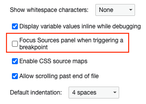
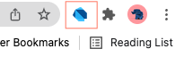

Before debugging, please disable focus on the Sources panel for breakpoints:
Settings > Preferences > Sources > uncheck "Focus Sources panel when triggering a breakpoint"

And make sure the Dart Debug Extension is pinned to your Chrome profile:
